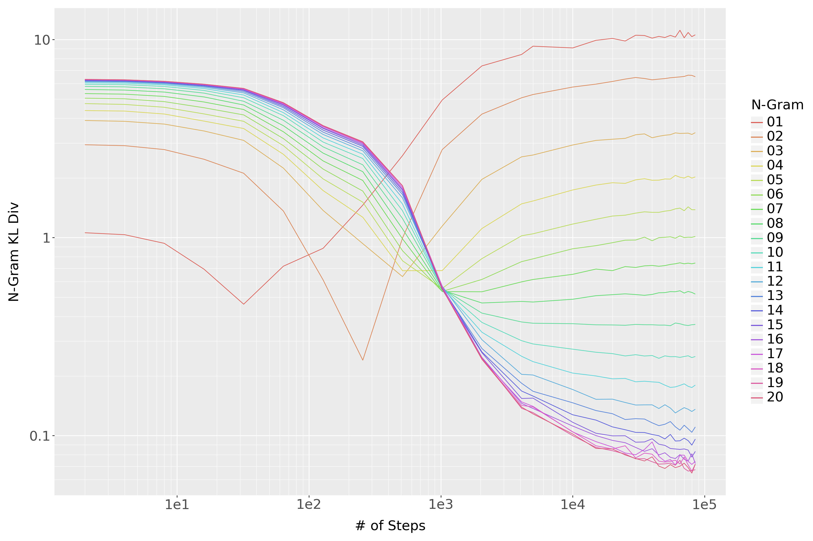

Methods to Analyze How Transformers Learn N-Grams
Introduction
Methods for Analyzing Transformers and N-Grams
N-Grams and the de Bruijn Graph
The de Bruijn graph \(B_{m,n}\) is a directed graph, where each vertex \(v \in V\) represents an \(n\)-tuple of \(m\) distinct characters \(C\). We can think of an \(n\)-tuple in a de Bruijn graph as a queue that always has \(n\) elements. New characters from the vocabulary added to the right hand side and popped off the left hand side. For a de Bruijn graph with \((n-1)\)-element tuples, there is an edge if we can get from one set of characters to another by adding an element on the right and removing the left-most element.
Consider \(B_{3,2}\), shown in Figure 1 on the vocabulary \(\{0, 1\}\). There is a directed edge from node \((t_1, t_2, t_3) \mapsto (s_1, s_2, s_3)\) if \(t_2 = s_1\) and \(t_3 = s_2\). So for \(B_{3, 2}\) there are edges \((0, 0, 1) \mapsto (0, 1, 0)\) and \((0, 1, 0) \mapsto (1, 0, 1)\), but no edge from \((0, 0, 1)\) to \((1, 0, 1)\).
We can consider a text sequence as a walk on the de Bruijn graph. The sequence aaabacabac maps to aa -> aa -> ab -> ba -> ac -> ca -> ab -> ba -> ac. This is the same as the sequence of bigrams (2-grams) and in general a sequence of \(n\)-grams can be encoded as a walk on \(B_{m, n}\). There is a directed edge between one node and another precisely when the next node can be the next \(n\)-gram. We can’t map ab -> ac because that would “change history” and make it such that b had never come after a.
Note that as \(n\) increases, \(B_{n,m}\) gets increasingly sparse–there are \(m^{n}\) nodes, but each node only ever has \(m\) in-going and \(m\) out-going edges.
The \(n\)-gram distribution \(\nu_n\) for a given corpus of sequences is a probability distribution over the “next” character given the previous \(n-1\).1 We can view the \(n\)-gram probability distribution as a function on the associated de Bruijn graph, \(G_{n}: B_{n-1, m} \rightarrow \mathbb{R}^n\).2 For each vertex \(v \in B_{n-1, m}\): \[ \nu_{n}(v) = p(x_{t+1} | x_{t} = v_{n-1}, \dots, x_{t-n+1} = v_{1})\]
As we increase \(n\), \(\nu_{n}\) becomes a better and better representation of the ground truth distribution for a corpus. Our basic hypotheses are that: 1. A neural network will learn something close to \(\nu_{n}\) (for perhaps large \(n\)). 2. We will be able to analyze and interpret a neural network by comparing it to \(\nu_{n}\).
Establishing the Connection Between a Neural Network and \(\nu_{n}\)
Before proceeding with analyzing a neural model with respect to the \(n\)-gram distribution we need to establish that the distribution the model gives on sequences is sufficiently similar to an \(n\)-gram model. Additionally an \(n\)-gram distributions assume that the the distribution of the next character is fixed conditional on the prior \(n-1\) characters.
Do Transformer Models Learn N-Grams?
The simplest way to check whether or not a transformer is learning an \(n\)-gram distribution \(\nu_n\) is to just compare the transformer’s distribution to \(\nu_n\). There are many divergences on discrete probability spaces, but one of the most important is the Kullback-Liebler (KL) divergence. For two measures \(P, Q\) on a discrete probability space \(\chi\), the KL divergence \(D_{KL}\) is:
\[ D_{KL}(P || Q) = \sum_{x \in \chi} P(x)\log[\frac{P(x)}{Q(x)}]\]
In our case the sample space is \(n\)-tuples of characters \(C^n\). We can get a good estimate of the KL-divergence by just sampling \(c \in C^{n-1}\) uniformly from the corpus and calculating the KL divergence of the conditional distributions: \(\mathbb{E}_{c \in C^{n-1}}[D_{KL}(T(\cdot | c) || \nu_{n}(\cdot | c)]\)
We have done these calculations for transformer models trained on TinyStories, which you can see in Figure 2

How Much Do Transformer Models Depend on Prior Context?
An assumption in an \(n\)-gram probability distribution is that probability of token is dependent only on the previous \(n-1\) tokens: $p(c_{t+1} = c) = p(c_{t+1} = p(c | c_t, …, c_{t-n+1}) $. All of the prior context does not matter at all. This is obviously a simplification for “true” language, but for \(n\)-grams to be a useful lens we need to confirm the extent to which it is true for neural language models.
There are two ways